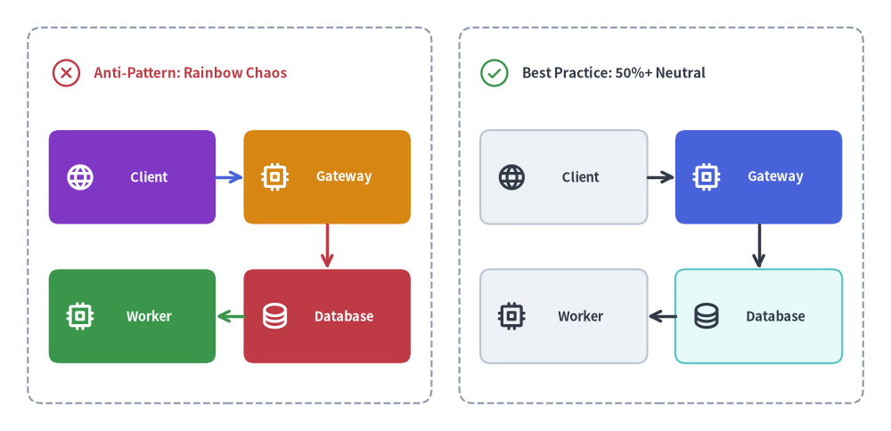
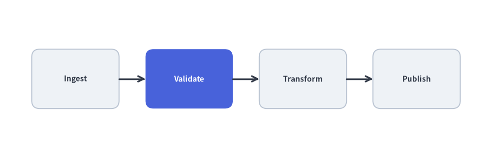

図解デザインとスタイルガイド
開発者や AI コーディングエージェントが生成する技術図解は、書籍や論文にそのまま掲載できる品位と落ち着きを備え、人間が丁寧に設計したかのように明快であるべきです。
本ガイドでは、あらゆるアーキテクチャ図・ワークフロー・チャートにおいて明瞭な視覚階層と高い可読性を保つための Drawlib の基本ビジュアルデザイン原則（uv run drawlib rules show style-guide）を解説します。
1. 視覚比較: レインボーカオス vs. 50% 以上のニュートラル階層
図中のすべてのボックスを別々の高彩度カラーで塗りつぶしてしまうと、どの要素も際立たなくなり、読み手は瞬時に視覚的疲労を覚えます。全ノードの 50% 以上を落ち着いたニュートラルカードで統一し、鮮やかな塗りつぶし（Styles.PrimaryFlat）を 1〜2 個の注目コンポーネントだけに絞ることで、一目で伝わる視覚階層が生まれます。

Source Code
from drawlib.canvas import save, setup
from drawlib.icons import phosphor
from drawlib.lines import line
from drawlib.shapes import rectangle
from drawlib.styles import Styles
from drawlib.text import text
setup(width=128, height=62)
# Left Panel: Anti-Pattern (Rainbow Chaos - every node competes for attention)
rectangle((33, 31), width=58, height=54, style=Styles.MutedDashed.patch(shape_r=2))
phosphor.x_circle((9.5, 51.5), width=4.8, style=Styles.DangerFlat)
text((13.5, 51.5), "Anti-Pattern: Rainbow Chaos", style=Styles.DangerBold.patch(text_size=11.0, halign="left"))
left_nodes = [
(19, 36.5, "Client", phosphor.globe, Styles.AccentFlat, Styles.WhiteBold),
(47, 36.5, "Gateway", phosphor.cpu, Styles.WarningFlat, Styles.WhiteBold),
(19, 16.5, "Worker", phosphor.cpu, Styles.SuccessFlat, Styles.WhiteBold),
(47, 16.5, "Database", phosphor.database, Styles.DangerFlat, Styles.WhiteBold),
]
for cx, cy, lbl, icon_fn, card_st, txt_st in left_nodes:
rectangle(
(cx, cy),
width=24,
height=13.5,
style=card_st.patch(shape_r=1.5),
text=lbl,
text_style=txt_st.patch(text_size=10.5, xy_shift=(2.4, 0)),
)
icon_fn((cx - 7.5, cy), width=4.4, style=txt_st)
line((31, 36.5), (35, 36.5), arrow_head="->", style=Styles.PrimaryBold)
line((47, 29.7), (47, 23.3), arrow_head="->", style=Styles.DangerBold)
line((35, 16.5), (31, 16.5), arrow_head="->", style=Styles.SuccessBold)
# Right Panel: Best Practice (50%+ Neutral Baseline + 1 Hero Focal Point)
rectangle((95, 31), width=58, height=54, style=Styles.MutedDashed.patch(shape_r=2))
phosphor.check_circle((71.0, 51.5), width=4.8, style=Styles.SuccessFlat)
text((75.0, 51.5), "Best Practice: 50%+ Neutral", style=Styles.DarkBold.patch(text_size=11.0, halign="left"))
right_nodes = [
(81, 36.5, "Client", phosphor.globe, Styles.Neutral, Styles.DarkBold),
(109, 36.5, "Gateway", phosphor.cpu, Styles.PrimaryFlat, Styles.WhiteBold),
(81, 16.5, "Worker", phosphor.cpu, Styles.Neutral, Styles.DarkBold),
(109, 16.5, "Database", phosphor.database, Styles.SecondaryNeutral, Styles.DarkBold),
]
for cx, cy, lbl, icon_fn, card_st, txt_st in right_nodes:
rectangle(
(cx, cy),
width=24,
height=13.5,
style=card_st.patch(shape_r=1.5),
text=lbl,
text_style=txt_st.patch(text_size=10.5, xy_shift=(2.4, 0)),
)
icon_fn((cx - 7.5, cy), width=4.4, style=txt_st)
line((93, 36.5), (97, 36.5), arrow_head="->", style=Styles.DarkBold)
line((109, 29.7), (109, 23.3), arrow_head="->", style=Styles.DarkBold)
line((97, 16.5), (93, 16.5), arrow_head="->", style=Styles.DarkBold)
save()
2. 配色規律の 3 原則
2.1. 50% 以上のニュートラルベースライン原則
すべての図解において、全ノードの少なくとも 50% 以上には落ち着いたニュートラルまたはティントニュートラル（淡色ニュートラル）のカードスタイルを使用します。
- 純粋なニュートラルカード:
Styles.Neutral（淡いグレーの塗り、控えめな枠線、高コントラストなチャコール文字色）またはStyles.NeutralFlat（枠線なしカード）。 - 色付きニュートラルカード:
Styles.PrimaryNeutral、Styles.SecondaryNeutral、Styles.BlueNeutral、Styles.TealNeutral、Styles.PurpleNeutral、Styles.AmberNeutral。これらはトーン 1 のパステル塗りつぶしにトーン 3 の枠線とトーン 6 の濃色テキストを組み合わせており、彩度を抑えながらサブシステムのグルーピングを上品に表現できます。
2.2. フォーカルポイント階層（ヒーローノードは 1〜2 個）
高彩度なベタ塗りスタイル（Styles.PrimaryFlat や Styles.AccentFlat と text_style=Styles.WhiteBold の組み合わせ）は、1 枚の図につき最も注目させたい 1〜2 個の主役要素（中心となる API ゲートウェイ、オーケストレータ、議論対象のボトルネックなど）だけに限定してください。
2.3. セマンティックロールの使い分け
各セマンティックロールには、アーキテクチャ上の明確な意図が割り当てられています。
| セマンティックロール | 推奨トークン | アーキテクチャ上の用途 |
|---|---|---|
Neutral |
Styles.Neutral, Styles.NeutralFlat |
標準的なサービス、ワーカーノード、クライアントアプリ、一般ステップ（50% 以上のベースライン）。 |
Primary |
Styles.PrimaryFlat（ヒーロー）, Styles.PrimaryNeutral |
最も注目すべき主要コンポーネント、または中核となる処理経路。 |
Secondary |
Styles.SecondaryNeutral, Styles.Secondary |
データベース、キャッシュ、メッセージブローカー、補助ストレージ。 |
Accent |
Styles.AccentFlat（ヒーロー）, Styles.AccentNeutral |
外部トリガー、ユーザーエントリーポイント、強調イベント。 |
Success |
Styles.SuccessNeutral, Styles.SuccessFlat |
正常稼働状態、検証済み出力、完了ステージ。 |
Warning |
Styles.WarningNeutral, Styles.WarningDotted |
縮退運転パス、レート制限キュー、手動承認ゲート。 |
Danger |
Styles.DangerNeutral, Styles.DangerFlat, Styles.DangerBold |
エラーロールバック、デッドレターキュー（DLQ）、セキュリティリスク。 |
Muted |
Styles.MutedDashed, Styles.Muted |
VPC 境界、Kubernetes Namespace、クラスタゾーン枠。 |
3. タイポグラフィとコネクタの規律
3.1. 高コントラストなニュートラルタイポグラフィ
一般的なタイトル、ノードラベル、注釈テキストに鮮やかな青（Styles.Primary）や紫（Styles.Secondary）を使わないでください。
- 明るい背景上（キャンバス、
Styles.Neutral、Styles.*Neutral）: 常にStyles.DarkBoldまたはStyles.Darkを使用し、補足メタデータ（:8080、v1.2など）にはStyles.Mutedを使用します。 - 濃色・高彩度の塗りつぶし上（
Styles.PrimaryFlat、Styles.AccentFlat、Styles.DangerFlat）: 常にStyles.WhiteBoldまたはStyles.Whiteを使用します。
3.2. コネクタは原則ニュートラル色にする
標準的なワークフローやアーキテクチャの接続線には Styles.DarkBold（または Styles.Dark）を使用します。色付きの線（Styles.DangerBold、Styles.WarningDotted、Styles.SuccessBold）は、例外経路、リトライ、検証済みコミットといった意味的な強調が必要な箇所に限定してください。
4. 空間レイアウトと座標設計の規律
4.1. 数式による等間隔配置
左から右へ目分量で 1 つずつ座標を決め打ちすると、右端が詰まった不均衡なレイアウトになりがちです。余白と間隔が完全に左右対称になるよう、簡潔な数式でノード座標を算出してください。
from drawlib.canvas import save, setup
from drawlib.lines import line
from drawlib.shapes import rectangle
from drawlib.styles import Styles
setup(width=124, height=40)
total_w = 124
margin_x = 8
n = 4
box_w, box_h = 22, 15
y = 20
# Dynamically compute equal gap between N boxes
gap = (total_w - (margin_x * 2) - (box_w * n)) / (n - 1)
centers = [margin_x + (box_w / 2) + i * (box_w + gap) for i in range(n)]
labels = ["Ingest", "Validate", "Transform", "Publish"]
for i, cx in enumerate(centers):
if i == 1:
rectangle((cx, y), width=box_w, height=box_h, style=Styles.PrimaryFlat.patch(shape_r=2), text=labels[i], text_style=Styles.WhiteBold.patch(text_size=11.0))
else:
rectangle((cx, y), width=box_w, height=box_h, style=Styles.Neutral.patch(shape_r=2), text=labels[i], text_style=Styles.DarkBold.patch(text_size=11.0))
if i > 0:
prev_cx = centers[i - 1]
line((prev_cx + box_w / 2, y), (cx - box_w / 2, y), arrow_head="->", style=Styles.DarkBold)
save()

4.2. 意味のある座標変数と奥から手前への Z オーダー
描画スクリプトは以下の 4 つの明快なステージに分けて構造化します。
- ジオメトリと意味のある座標変数 (
*_xy): スクリプト冒頭で名前付き座標タプル（client_xy、gateway_xy、db_xyなど）を一度だけ定義します。 - Z レイヤー 1（境界コンテナ）: 背面の VPC やクラスタ境界枠（
Styles.MutedDashed）を描画します。 - Z レイヤー 2（コネクタ）: 図形の外周ポート（
cx ± w/2,cy ± h/2）にスナップさせて接続線を描画します。 - Z レイヤー 3（ノードとバッジ）: 前面のノードカードやコールアウトバッジを描画します。
4.3. 高レベルコンポーネントを優先する
多数のプリミティブな rectangle() や line() を手作業で組み立てる前に、レイアウトを自動計算してくれる高レベルコンポーネントが使えないか確認してください。